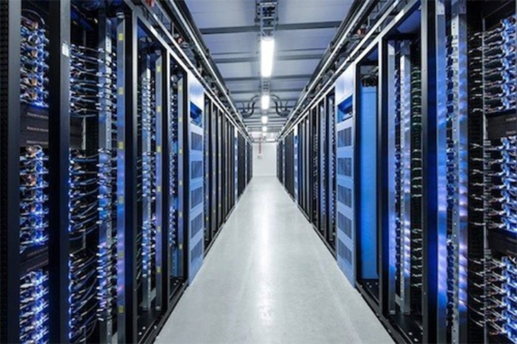

서버란 무엇인가요?
- 서버
-
제가 순대국밥집 사장을 하고 있다고 가정합시다. 그럼 제가 제 가게에 있을 때는 사장이고 제 가게에 오시는 분들은 손님이겠죠?
하지만 제가 다른 순대국밥집엘 가면 제가 손님이 됩니다.
서버는 단순히 이런 개념이라고 할 수 있습니다.
(순대국밥집이 서버이고 그 순대국밥집을 찾아주는 고객들이 클라이언트라고 보시면 됩니다.)
그런데 제 순대국밥집이 맛집이 되었습니다. 그래서 손님이 마구마구 몰리기 시작하죠.
하지만 제 순대국밥집은 너무 작습니다. 손님이 앉을 테이블이 많지 않아서 손님들이 줄서서 기다려야되고 때론 몇몇분은 그냥 돌아가시기도 하죠.
(서버폭주)
그래서 사장인 저는 그런 손님들을 보면서 마음이 좋지 않습니다. 다른 한편으론 배부른 소리긴 하지만 매일매일 고된 일에 몸이 지쳐가죠.
그래서 대형 마트 안으로 이사를 갑니다.
(서버를 제공해주는 IDC - internet data center 같은 곳)
대형 마트는 손님을 수용할 수 있는 테이블도 많고, 제 일을 도와줄 직원분들도 많습니다.
제 가게에 왔다가 그냥 돌아가는 손님 없이 모두를 대접해줄 수 있게 되었습니다.
비유가 적절한지는 모르겠습니다만, 이런게 서버입니다.
위 말은 우리가 사용하는 개인용 노트북 컴퓨터 또는 PC도 서버가 될 수 있다는 뜻이죠.
제가 운영하는 순대국밥집처럼 말이죠.
하지만 순대국밥집을 차리는 것은 쉬운일이 아니죠.
순대국밥을 만드는 스킬도 익혀야할 것이고 가게자리도 알아봐야할 것이고 목돈도 필요할 것입니다.
개인용 PC를 서버로 만들 수는 있지만 서버로 만들기위해선 서버용 소프트웨어도 설치해야되고 이것저것 설치할 게 많습니다.
절대 쉬운일이 아니죠.
그리고 조그만 순대국밥집을 차렸다가 맛집이되면 수용못하는 손님들도 생길것이고 무엇보다 사장도 지칩니다.
개인용 PC 서버는 작기 때문에 제 서버에 접속못하는 사람들도 생길 것이고 그리고 하루종일 켜놔야하기에 빨리 방전될 것입니다.
그래서 이런 서버를 제공해주는 일종의 대형마트 - IDC(internet data center)에 특정 컴퓨터를 사용해 서버를 제공받습니다.
또는 AWS 같은 클라우드 컴퓨팅 서비스를 사용합니다.
PS. IDC란 냉각장치들과 함께 수많은 컴퓨터들이 쫘르륵 박혀있는 시설입니다.
